Backend Developer.
저는 다양한 프로젝트에 참여하면서 백엔드 개발 분야에서 꾸준한 경험을 쌓아왔습니다.전문성을 향상시키기 위해 끊임없이 노력하며 새로운 기술을 지속적으로 배우고 있습니다.spring mvc + bui에서 springboot + vue 마이크로서비스 업그레이드로 프론트엔드 개발을 병행했었고 알림발송 기능을 Quartz스케줄러 라이브러리로 구현했습니다.그리고 최근에는 SpringAi기반으로 LLM + RAG + MCP등을 도입하여 챗봇을 개발하고 클라우드 서버에 배포까지 하였습니다.
About
📅 1991. 02. 08
📧 jinquanzhu86@gmail.com
Skills
⭐ Java, Spring AI, LLM, MCP, RAG, Spring Cloud, Spring boot, Spring MVC, MyBatis, Git, SVN, Maven, JavaScript, VUE
⭐ MySQL, Oracle, Redis, Elasticsearch, solr
⭐ Linux, Docker, Kubernetes, Kafka 등
Projects
2025.09 ~ 2025.10
개요
2025년 AI의 거센 물결이 모든 산업을 변화시키고 있습니다. 기업은 더 효율적으로 운영하고 더 나은 경험을 제공하기 위해 혁신을 이어가며 개발자는 기술의 경계를 넘어 새로운 가능성을 만들어가고 있습니다. 이 변화의 중심에서 빠르고 유연한 인공지능 엔진을 구축하는 힘이 미래를 주도하는 열쇠가 되고 있습니다. LLM을 중심으로 Spring AI, RAG, MCP를 결합하여 실시간 데이터 검색과 지식 기반 응답이 가능한 지능형 AI 엔진을 설계하였습니다. 이를 통해 대화형 서비스, 문서 요약, 고객지원 등 다양한 산업 환경에 적용 가능한 통합형 AI 솔루션을 구현하였습니다.
역할
자바 프로젝트 구축및 세팅, SpringAI + DeepSeek통합, LLM호출 실행시간 측정, SSE연동, RAG 기능 개발, SearXNG통합, MCP서비스 통합및 툴 개발, 클라우드 서버 환경설정및 프론트/백엔드 배포
Skills
Java, LLM, MCP, RAG, Docker, Spring boot, Spring AI, Mybatis, okhttp, SSE, AOP, SearXNG, Mysql, Redis
- 아키텍처 다이어그램
- 대용량 데이터 비동기 스트리밍 처리
- LLM 호출 실행시간 측정
- RAG 기능 구축
- SearXNG통합
- MCP서비스
- 대화 메모리 기능
- 클라우드 서버 구축및 서비스 배포
- 회고

기존 동기 방식에서는 데이터가 많을 경우 메모리 부담과 응답 지연이 발생함. 대용량 데이터를 비동기 스트리밍 방식으로 SSE(Server-Sent Events)를 적용하여 서버에서 발생하는 데이터를 실시간으로 클라이언트에 전송함으로써 메모리 효율성과 초기 응답 속도를 동시에 향상시켰습니다.
Spring AOP를 활용하여 LLM 호출 메서드의 실행 시간을 자동으로 측정하고 성능 통계와 병목 분석을 가능하도록 구현하였습니다.
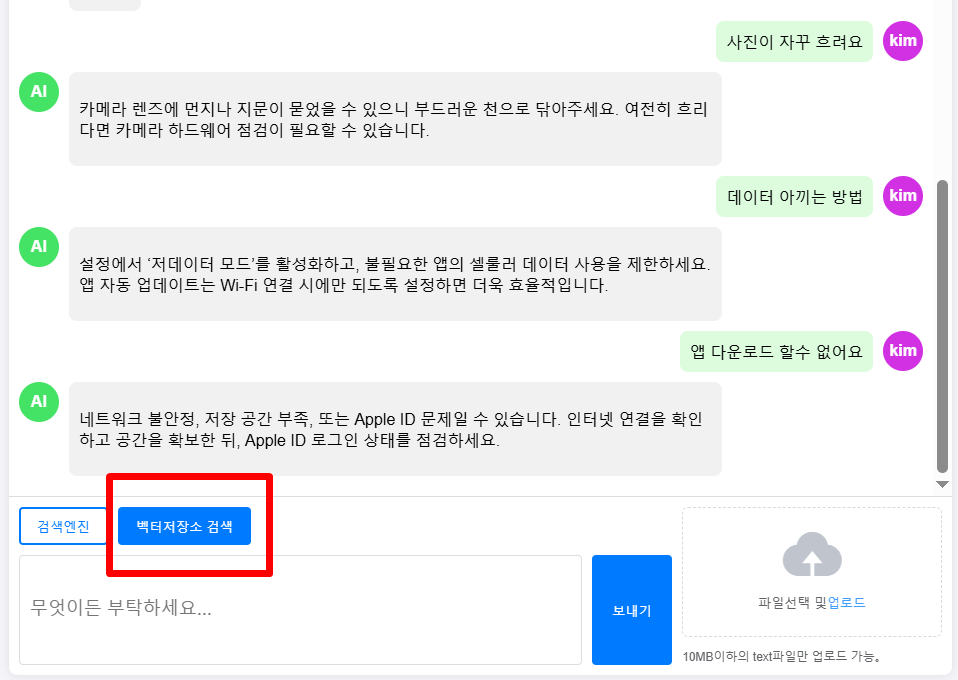
RAG(Retrieval-Augmented Generation) 기능을 구축하여 도메인 문서(FAQ, 기술문서, 정책등)를 Redis Vector Store에 저장하고 LLM(DeepSeek, 오픈 모델)을 통해 문맥 기반 응답을 생성및 스트리밍. 문서 업로드 & 자동 전처리(텍스트 추출 → 분절 → 임베딩), Redis VectorStore기반 빠른 유사도 검색, RAG 파이프라인: 검색된 context + LLM 프롬프트 → 응답 생성.
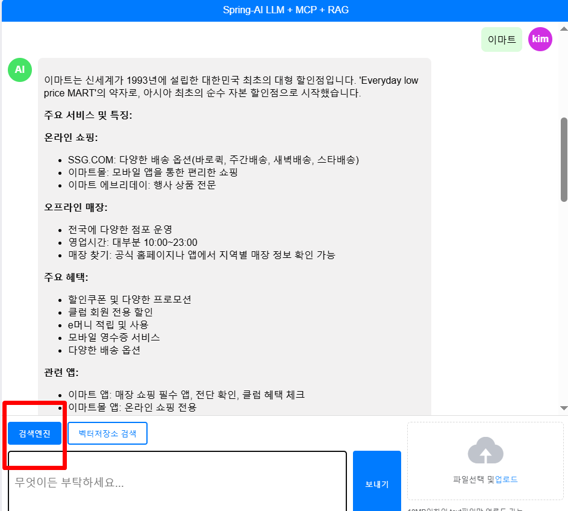
검색 요청 & 통합: SearXNG API 호출후 JSON 결과 파싱, OkHttp를 이용한 GET요청 처리, 연결 타임아웃/재시도 로직 적용, 다중 검색 엔진 결과 통합 및 중복 제거. LLM 연동: 사용자가 입력한 자연어 질문을 LLM로 전달 → 관련 검색 결과와 함께 답변 생성.
외부 도구(API)와 내부도구 들을 MCP표준 포맷으로 등록 및 호출. Amap: 지도 및 위치 서비스, 내부 MCP서버 개발: 상품관리 툴(조회, 등록, 수정등). 이메일 서비스 툴, 시간정보 툴 등.
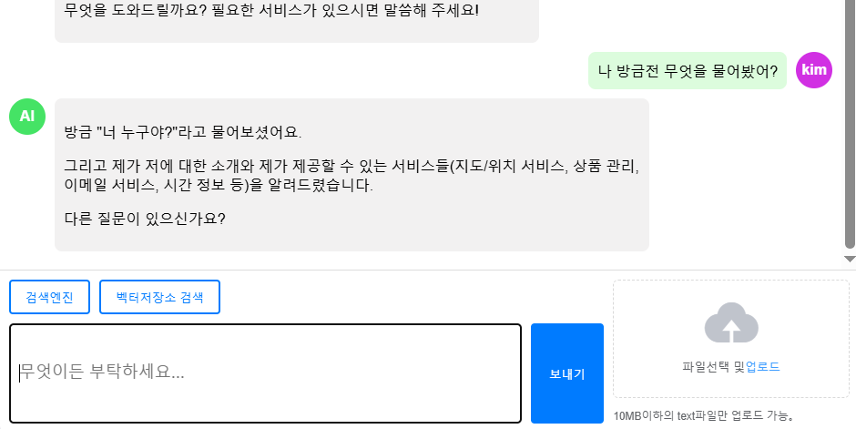
LLM이 대화 기록을 기억하도록 설정, 대화형 응답 품질 향상 맥락 유지.
서버 환경 구축 JDK, Docker, MySQL, Redis, Nginx 등의 필수 구성 요소를 직접 설치 및 설정하였습니다. 이후 백엔드 프로젝트를 빌드(JAR 패키징)하여 배포하고 프론트엔드 프로젝트는 정적 파일 형태로 Nginx에 배포하여 백엔드 API와 연동되는 전체 서비스 환경을 완성하였습니다. 그리고 Nginx 리버스 프록시 설정을 통해 외부 접근이 가능하도록 구성하였습니다.
이 프로젝트를 통해 단순히 LLM을 사용하는 수준을 넘어 엔지니어링적으로 AI 서비스를 통합하고 운영하는 전체 프로세스를 경험할수 있었습니다. AI는 모델의 성능뿐 아니라 데이터 파이프라인, 검색 인프라, 서비스 통합 아키텍처가 함께 맞물릴 때 비로소 가치가 극대화된다는 점을 실감했습니다. 특히 Spring AI와 RAG, MCP, SearXNG의 조합을 통해 AI가 외부 데이터에 접근하고 실시간으로 학습 수준의 응답을 제공하는 구조를 직접 구현하면서 개발자로서의 기술적 시야와 설계 능력을 크게 확장할 수 있었습니다.
2020.12 ~ 2021.3
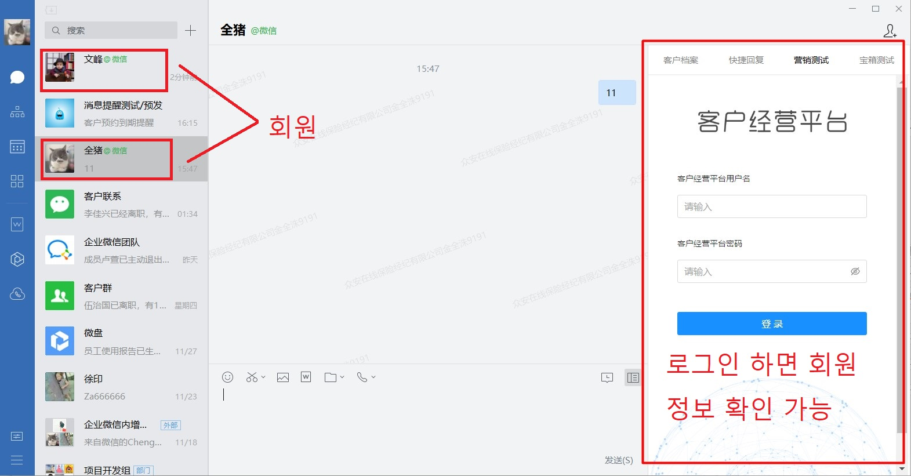
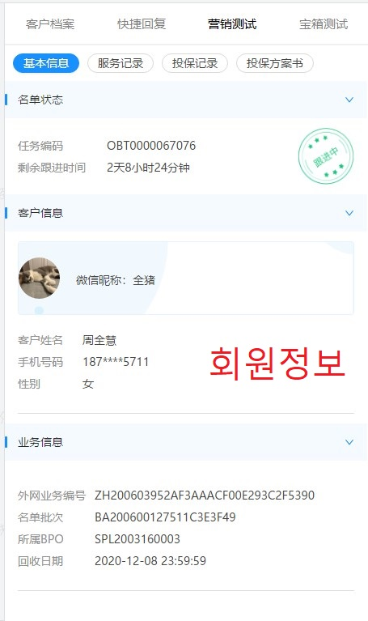 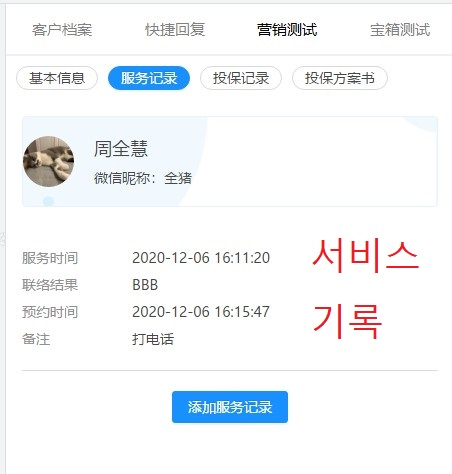 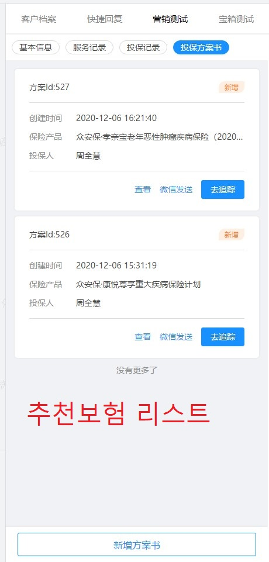
개요
이 프로젝트는 영업사원이 기업용 위챗(WeChat)을 통해 회원 현황(보험 데이터 포함)과 회원 관리 업무를 보다 쉽고 효율적으로 수행할수 있도록 지원하는 업무 관리 시스템 입니다.
주요 기능:
회원 데이터 조회 및 관리: 보험 계약 현황, 회원 프로필, 연락처 등 통합 관리.
회원 상태 알림: 신규 고객, 갱신, 만기 등 실시간 알림 기능.
영업 활동 기록: 방문 기록, 상담 내역, 계약 진행 상황 등.
위챗 연동: 기업용 위챗에서 바로 접근 가능 메시지 및 알림 기능 포함.
역할
마이크로서비스 아키텍처 설계/구축/개발, Spring + Quartz 통합 알림톡 발송 스케줄링, 위챗 api연동, RESTful API 개발, 로그인 로직 개발, 기타 모듈과의 연동, 데이터베이스 아키텍처 설계
Skills
spring boot, spring cloud, Maven, RocketMQ, redis, mysql, mybatis, quartz, session, interceptor, ThreadLocal, OSS(Object Storage Service), VPC, K8s
- Quartz기반 예약 알림톡
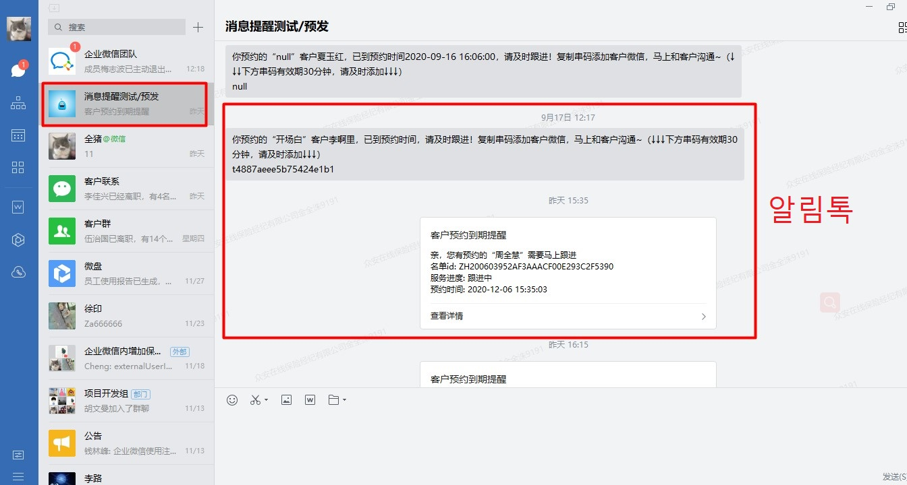
@Override
public Action consume(Message message, ConsumeContext context) {
log.info("Receive: {}", message);
try {
// 坐席userid、名单id、客户姓名、跟进状态、预约时间、
String body = new String(message.getBody());
log.info("message body: {}", body);
CallBackAppointmentDTO obj = JSON.parseObject(body, CallBackAppointmentDTO.class);
Long octopusFenceUserId = obj.getAgentId();
WechatWorkUser user = getUser(octopusFenceUserId);
int i = obj.getAppointmentTime().compareTo(new Date());
// 如果没查到成员关联的坐席userid, 或者已过期时间则跳过
if (user != null && i > 0) {
String triggerName = triggerPrefix + obj.getOutBizNo();
QuartzJobDTO quartzJob = new QuartzJobDTO();
quartzJob.setJobName(jobPrefix + obj.getOutBizNo());
quartzJob.setJobGroup(jobGroup);
quartzJob.setTriggerName(triggerName);
quartzJob.setTriggerGroup(triggerGroup);
quartzJob.setJobClass(MessageWarnJob.class);
quartzJob.setCron(DateUtil.toCron(obj.getAppointmentTime()));
Map<String, Object> data = buildData(obj, user.getUserid());
quartzJob.setData(data);
// new job add
schedulerJobManager.scheduleJob(quartzJob, true);
}
return Action.CommitMessage;
}
catch (Exception e) {
log.error("预约提醒失败: ", e);
return Action.ReconsumeLater;
}
}
본 기능은 사용자가 입력한 예약 시간에 맞춰 시스템이 자동으로 알림톡 메시지를 발송하도록 구현한 예약 알림 서비스입니다. 예를 들어 사용자가 미리 상담 일정이나 보험 만기일 등을 등록하면 해당 시간이 도래했을 때 자동으로 WeChat 메시지를 발송하여 예약 내용을 안내합니다.
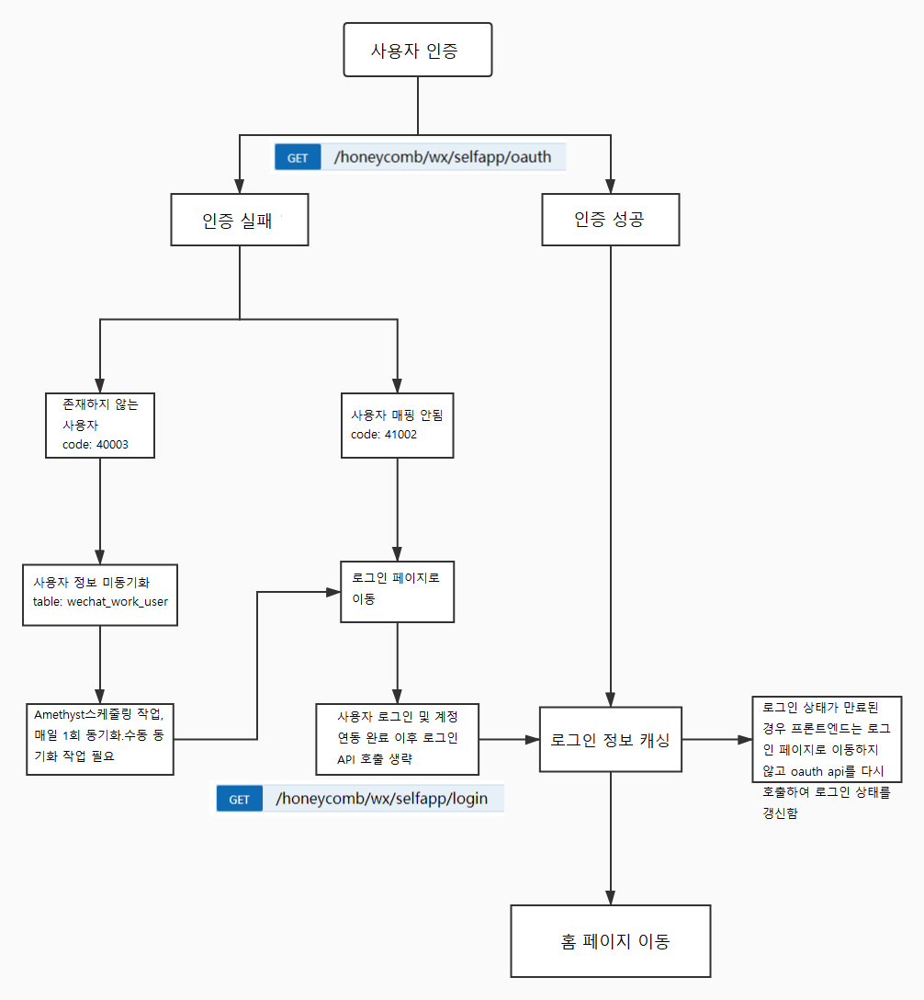
Spring Boot와 Redis 기반으로 사용자 인증 및 계정 연동을 구현하였습니다. 로그인 시 Cookie/Session을 사용해 인증 상태를 유지하고 Interceptor를 통해 모든 요청에서 로그인 검증 수행 하였고 기업용 위챗 멤버와 "baowa"계정 연동 완료 후 로그인 API 호출 없이 세션 유지를 합니다. 사용자 정보는 Amethyst(스케줄링 작업 시스템)를 이용해 매일 1회 자동 동기화(수동도 가능) 하고 로그인 상태 만료 시 프론트엔드는 로그인 페이지로 이동하지 않고 oauth API를 통해 로그인 상태 갱신 합니다.

기업용 위챗 환경에서 내부 구성원과 외부 고객(외부 연락처) 정보를 효율적으로 관리하고 회원-고객 관계를 연계하기 위한 데이터베이스 구조를 설계하였습니다. 목적은 영업사원이 고객 정보를 체계적으로 관리하고 내부계정 센터와 연결하여 데이터 일관성을 확보하는 것입니다.
2021.10 ~ 2023.12
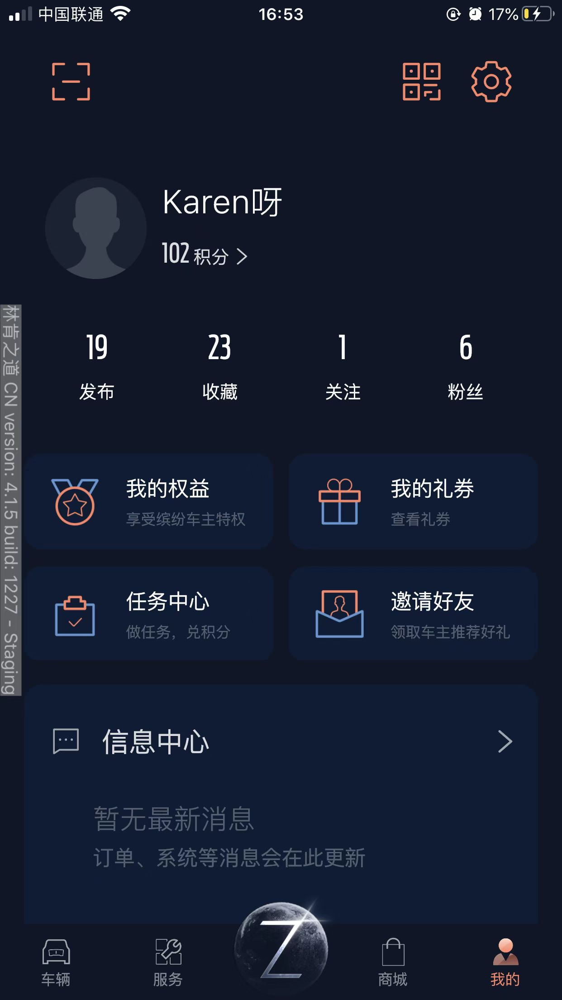
 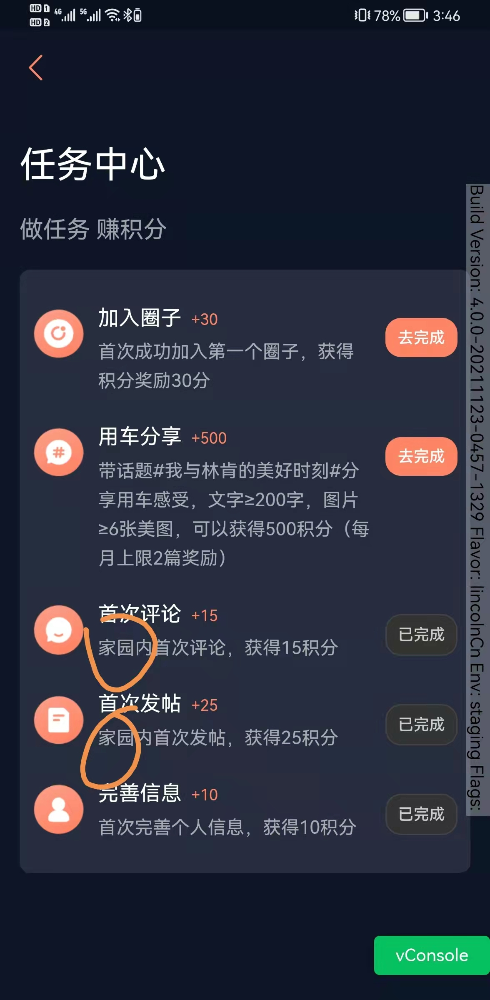
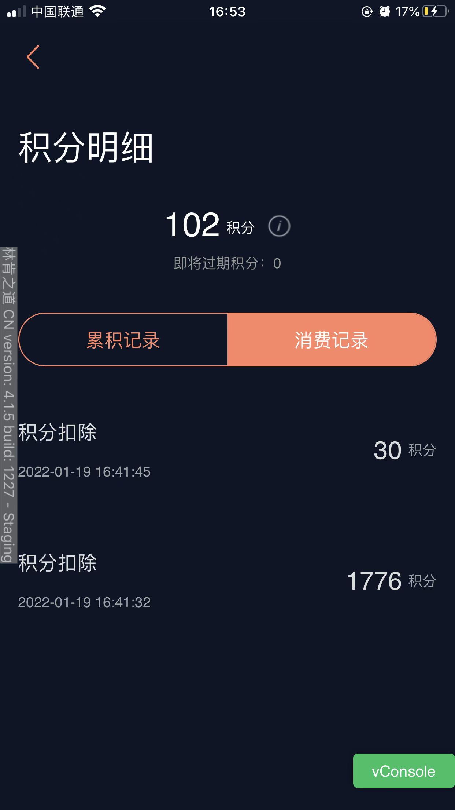
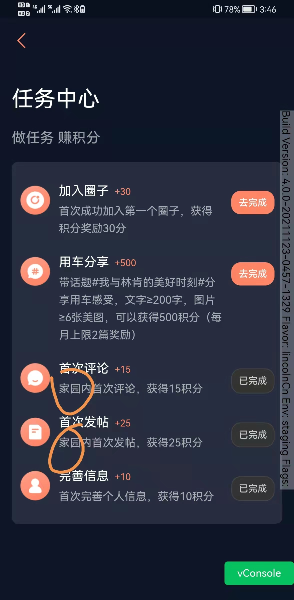
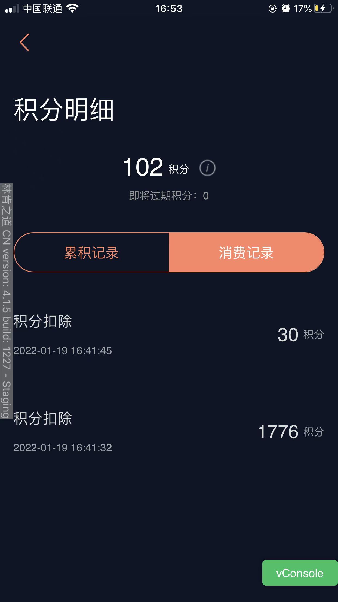
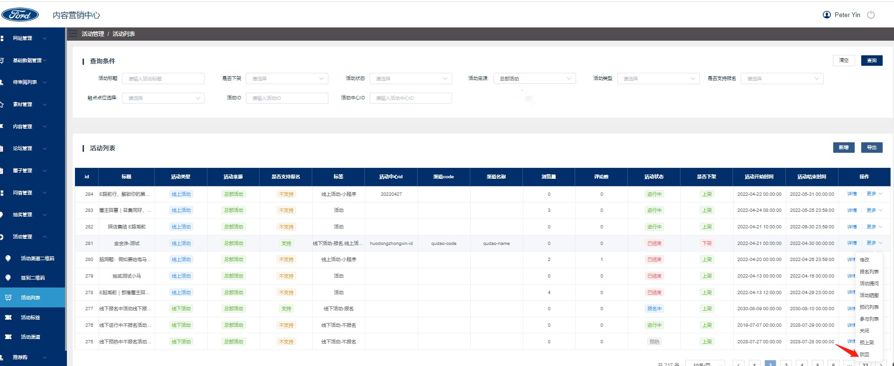
개요
Mustang Mach-E 전용 모바일 애플리케이션은 차량 관리, 서비스 예약, 커뮤니티, 리워드 시스템을 통합한 스마트 오너 플랫폼입니다. 사용자는 마이페이지를 통해 보유 포인트, 쿠폰 및 오너 혜택, 차량 정보 및 서비스 내역을 확인할 수 있으며 미션 센터 기능을 통해 친구 초대나 미션 수행으로 포인트를 적립하고 다양한 리워드로 교환할 수 있습니다. 또한 커뮤니티 서비스를 통해 오너 간의 주행 경험 공유, 충전 정보 교류, 차량 관리 노하우 공유가 가능하며 이를 통해 사용자 간의 브랜드 참여도와 유대감을 높였습니다.
역할
REST API 개발, DB 테이블 설계, Spring스케줄링 개발, 파일 업로드및 파씽, 각모듈 관리자 페이지 백엔드 개발, 쿼리 성능 개선, 포인트 적립과 쿠폰 교환 로직 설계, API 연동 최적화
Skills
spring boot, spring cloud, JWT, Maven, redis, mysql, mybatis, interceptor, K8s, Elasticsearch
- 추천 구매 기능 개발
- 쿼리 성능 개선
- 내 혜택/쿠폰 개발
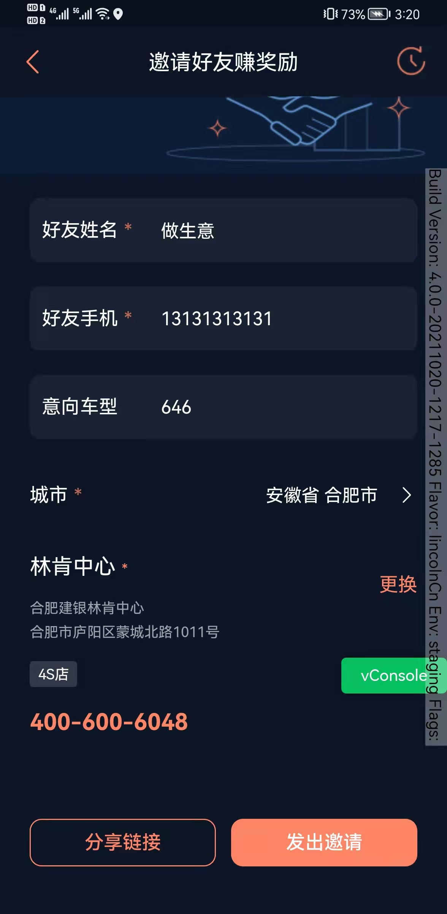 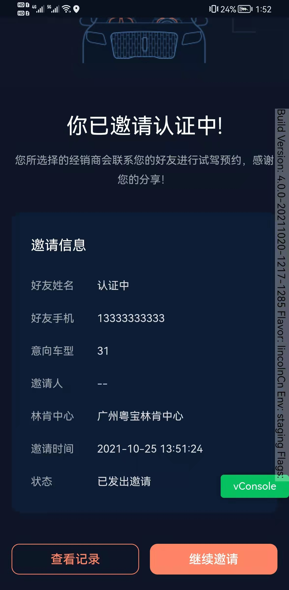 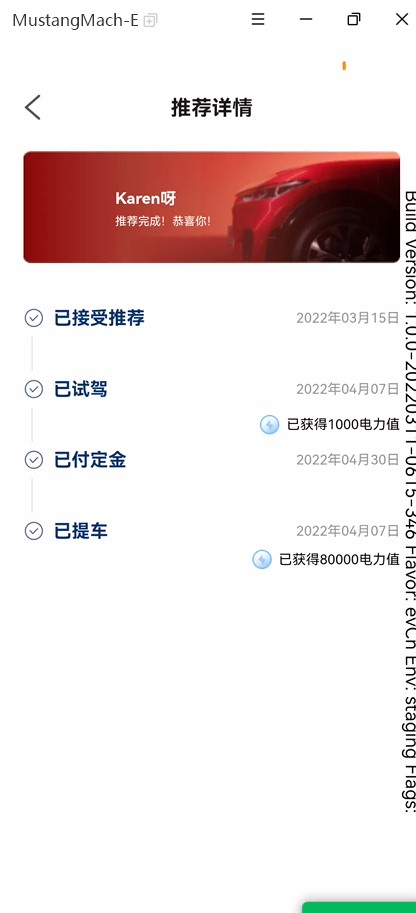 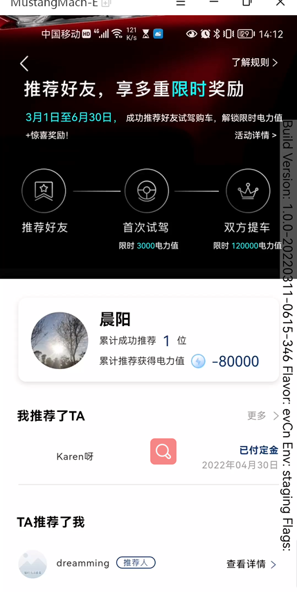
사용자가 초대한 친구가 상품을 구매할 경우 추천인에게 포인트가 자동 지급되는 구매 연동형 추천 시스템을 설계 및 구현하였습니다. 초대 코드 기반 추천 관계 매핑 주문 완료시 자동 보상 트리거. 신규 고객 전환율 20% 향상 마케팅 비용 절감.
기존 시스템은 복잡한 데이터 조인을 처리하기 위해 View를 활용하고 있었으나 대량 데이터 조회 시 응답 속도가 느리고 쿼리 최적화가 제한적이라는 문제가 발생했습니다. View 기반 복잡 쿼리를 테이블 기반 SQL로 전환하여 평균 응답 속도를 3초 → 0.9초로 단축하였고 인덱스 튜닝과 캐시 테이블을 통해 DB 부하를 40% 이상 감소시켰습니다.
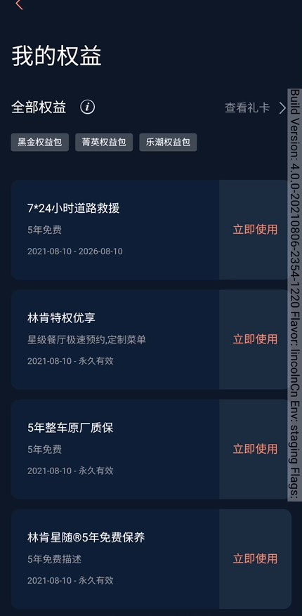 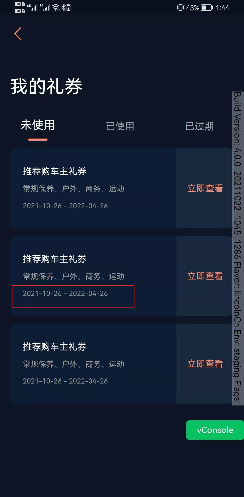 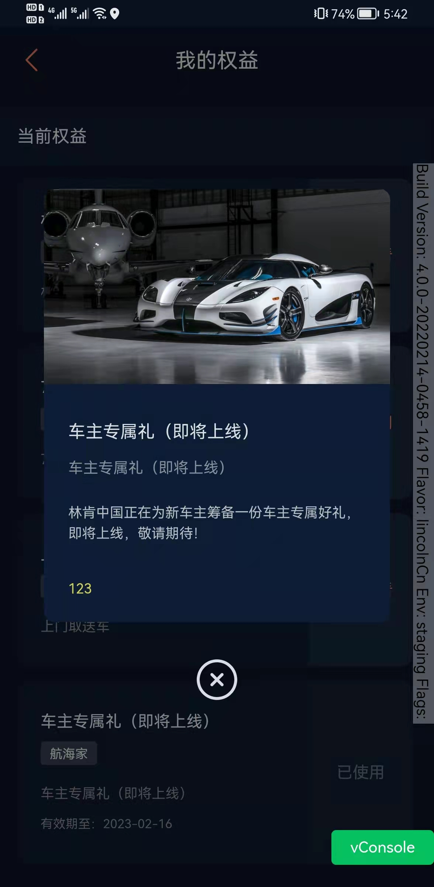
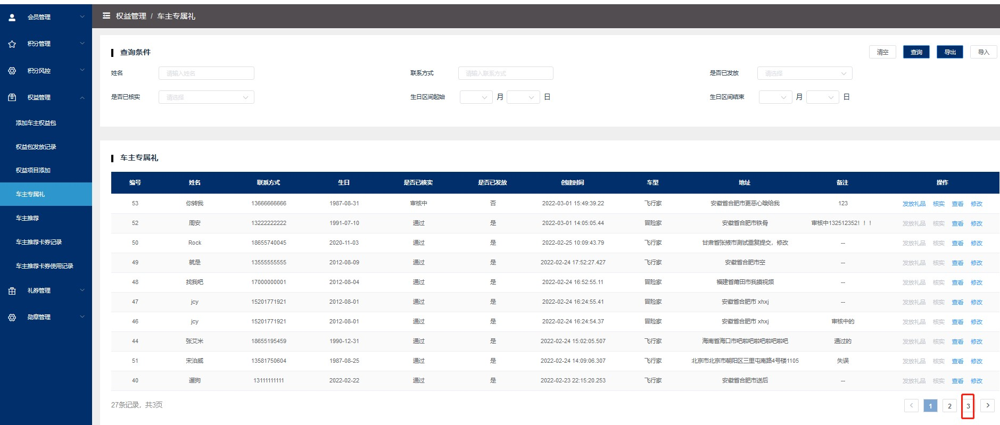
사용자가 초대한 친구가 상품을 구매할 경우 추천인에게 포인트가 자동 지급되는 구매 연동형 추천 시스템을 설계 및 구현하였습니다. 초대 코드 기반 추천 관계 매핑 주문 완료시 자동 보상 트리거. 신규 고객 전환율 20% 향상 마케팅 비용 절감.
2018.03 ~ 2021.4
개요
보험 가입, 조회, 결제, 클레임 처리 등 핵심 비즈니스 서비스. 클라우드 기반 서비스 아키텍처. 온라인과 오프라인 데이터를 연동하는 시스템.
역할
API개발, 성능개선, 클라우드 환경 서비스 운영, DB 테이블 설계, VPC 이전 프로젝트, 검색엔진 프로젝트 코드 추상화 및 최적화, 관리자 웹 프론트엔든 VUE개발
Skills
spring boot, spring cloud, Maven, kafka, redis, mysql, mybatis, binlog, interceptor, OSS(Object Storage Service), VPC, K8s, Elasticsearch, concurrent
- 검색엔진 프로젝트 코드 추상화 및 최적화
기존에 구현되어 있던 Binlog → Kafka → 동기화 서비스 → Elasticsearch 동기화 기능의 코드를 추상화및 최적화하여 DB 호출 횟수를 최소화하고 Elasticsearch 동기화 실패 시 재시도 기능을 추가하여 시스템의 안정성과 데이터 일관성을 강화하였습니다.
public abstract class AbstractMapMsgListener implements MessageListener<String, byte[]> {
/** 是否有异常标识: 未知表或者数据查询失败等, 不执行handleSuccess以及不输出增量成功日志 */
protected boolean notError;
/** 操作类别insert(0),delete(1), update(2) */
protected Obj.OptType operate;
@Override
public Action consume(ConsumerRecord<String, byte[]> record, ConsumeContext context) {
long startTime = System.currentTimeMillis();
ZorroEvent zorroEvent;
try {
zorroEvent = ZorroEvent.parseFrom(record.value());
} catch (InvalidProtocolBufferException e) {
log.error("kafka consumer 解析错误", e);
return Action.DiscardInvalidMessage;
}
if (zorroEvent != null) {
notError = true;
operate = zorroEvent.getOptType();
Map<String, String> data;
if(Obj.OptType.delete == operate) {
data = zorroEvent.getBeforeMap();
} else {
data = zorroEvent.getAfterMap();
}
String id = data.get(SearchConstants.EntityProperties.ID);
String db = zorroEvent.getDb();
String table = zorroEvent.getTb();
boolean isSuccess;
if (Obj.OptType.insert == operate) {
isSuccess = insert(db, table, data);
}
else if (Obj.OptType.update == operate) {
isSuccess = update(db, table, data);
}
else if (Obj.OptType.delete == operate) {
isSuccess = delete(db, table, data);
}
else {
String errMsg = buildLogMsg("unknown operate", db, table, id, operate);
log.info(errMsg);
return Action.CommitMessage;
}
if(!isSuccess) {
String errMsg = buildLogMsg("增量请求失败", db, table, id, operate);
log.warn(errMsg + ", key={}, topic={}, partition={}, offset={}", record.key(), record.topic(),
record.partition(), record.offset());
handleFailed(db, table, data);
return Action.ReconsumeLater;
}
if(notError) {
handleSuccess(db, table, data);
String logMsg = buildLogMsg("增量请求成功", db, table, id, operate);
log.info(logMsg + ", 耗时{}ms", System.currentTimeMillis() - startTime);
}
}
return Action.CommitMessage;
}
/**
* 新增
* @param db 库
* @param table 表
* @param data 增量数据
* @return success or failed
*/
protected abstract boolean insert(String db, String table, Map<String, String> data);
protected abstract boolean update(String db, String table, Map<String, String> data);
protected abstract boolean delete(String db, String table, Map<String, String> data);
protected abstract boolean handleSuccess(String db, String table, Map<String, String> data);
protected abstract boolean handleFailed(String db, String table, Map<String, String> data);
private String buildLogMsg(String name, String db, String table, String id, Obj.OptType operate) {
StringBuilder sbu = new StringBuilder();
sbu.append(name);
sbu.append(" db:");
sbu.append(db);
sbu.append(", table:");
sbu.append(table);
sbu.append(", id:");
sbu.append(id);
sbu.append(", operate:");
sbu.append(operate.toString());
return sbu.toString();
}
}
주요 기능 및 구현 내용
로컬 캐시 저장: 지역 데이터를 DB에서 조회 후 로컬 메모리에 캐싱하여 조회 성능 향상, 반복적인 DB 조회를 최소화하고 응답 속도 개선. 실시간 캐시 동기화: 데이터 추가, 수정, 삭제 발생 시 Kafka 메시지 발행, 메시지를 수신하면 로컬 캐시를 즉시 갱신. 주기적 캐시 갱신: 데이터 정확성 유지를 위해 24시간마다 자동으로 캐시 업데이트 수행.
@Slf4j
@Component
public class CmdsRegionCache {
private static final List<DictItem> regionCache = new CopyOnWriteArrayList<>();
private final ScheduledExecutorService executor = Executors.newSingleThreadScheduledExecutor();
/** cmds查询服务 */
private final DictService dictService;
@Autowired
public CmdsRegionCache(DictService dictService) {
this.dictService = dictService;
}
private List<DictItem> load() throws CacheException {
if(regionCache.isEmpty()) {
synchronized (this) {
if(regionCache.isEmpty()) {
List<DictItem> dictItems;
try {
dictItems = getDictItems();
} catch (MdsException e) {
throw new CacheException(e);
}
regionCache.addAll(dictItems);
expire(24, TimeUnit.HOURS);
log.info("投保地缓存完成.");
}
}
}
return regionCache;
}
/**
* 指定缓存过期时间
*
* @param time 如果小于1, 立即清空
* @param unit {@link TimeUnit}
*/
public void expire(long time, TimeUnit unit) {
if(time > 0) {
executor.schedule(()-> {
regionCache.clear();
log.info("投保地缓存定时清理结束.");
}, time, unit);
} else {
regionCache.clear();
log.info("投保地缓存清理结束.");
}
}
/**
* 获取所有地区数据
*
* @return {@link DictItem}
*/
public List<DictItem> get() throws CacheException {
List<DictItem> cache = load();
List<DictItem> items = new ArrayList<>();
items.addAll(cache);
return items;
}
/**
* 获取投保地信息
*
* @param insurePlaceCode 投保地code
* @return {@link DictItem} or null
*/
public DictItem get(String insurePlaceCode) {
try {
List<DictItem> cache = load();
for (DictItem region : cache) {
if(StringUtils.equals(region.getCode(), insurePlaceCode)) {
return region;
}
}
} catch (CacheException e) {
log.error(e.getMessage(), e);
}
return null;
}
/** 获取所有地区数据. 查询主数据71 */
public List<DictItem> getDictItems() throws MdsException {
ResultBase<Dict> result = dictService.loadDictByCode(CmdsUtil.SYSTEM_CODE, CmdsUtil.DICT_CODE, CmdsUtil.VERSION);
if (result.isSuccess()) {
List<DictItem> items = result.getValue().getItems();
return items;
} else {
throw new MdsException(CmdsErrorCode.LOAD_UNSUCCESS, JSON.toJSONString(result));
}
}
}
기존 BUI 기반의 프론트엔드를 Vue.js 프레임워크로 전면 교체하여 유지보수성과 확장성을 향상시켰습니다. Spring MVC 기반 백엔드를 Spring Boot로 마이그레이션하여 프로젝트 구조를 단순화하고 개발 및 배포 효율을 크게 높였습니다.
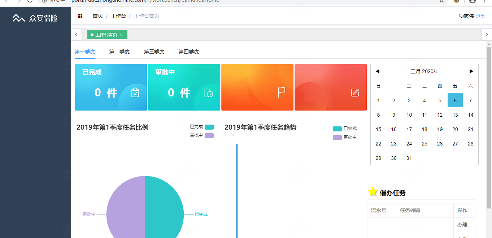 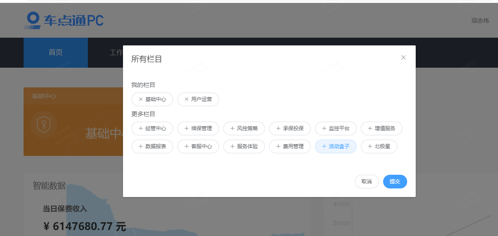
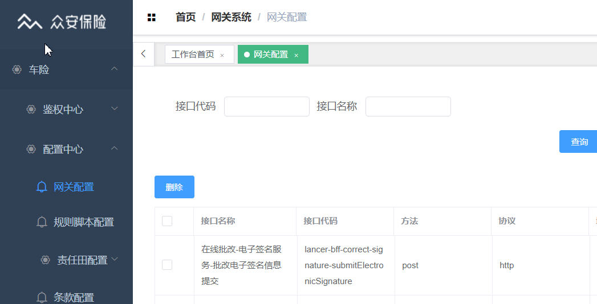
Other Projects
-
Baba 스포츠 쇼핑몰 (부트캠프)
2017.11 ~ 2018.1
개요
주요 기능:
1️.회원 관리: 회원가입/로그인/비밀번호 찾기, 사용자 정보 및 배송지 관리, 인증/권한 관리
2️.상품·검색: 상품 목록/상세 페이지. 카테고리, 브랜드, 필터, 정렬, 이미지 뷰어, 슬라이드 배너, Elasticsearch 검색
3️.장바구니·주문: 장바구니 관리, 주문 생성 및 결제(모의 포함), 주문 상태 변경, 취소, 환불, 결제 API 연동
4️.관리자(백오피스): 상품·주문·회원 관리, 통계 보고서, 관리자 권한
5️.성능·캐시: Redis 캐시, 데이터 동기화, 대용량 트래픽 비동기 처리
6️.보안·로그: 접근 권한, 인증. 예외/에러 로그, 보안 강화(XSS/SQL 방지)
7️.배포·운영: CentOS, Nginx
역할
자바 백엔드 개발, 프론트엔드 디버깅, 배포
Skills
java web, jsp, Servlet, JSTL, SpringMVC, Mybatis, Struts2, Hibernate, Jquery EasyUI, AngularJS, Bootstrap, MySQL, Solr, shiro, activeMQ, fastDFS, Dubbo, Web-Service, Tomcat, linux등
-
물류시스템(부트캠프)
2017.09 ~ 2017.10
개요
주요 기능으로 주문 관리, 화물 추적, 재고 관리 등을 포함하며, 권한 관리와 SSO 기능을 구현하여 시스템의 보안성을 확보합니다.
역할
자바 백엔드 개발, 프론트엔드 디버깅
Certificated
⭐ 정보처리 기능사 - 2025년 정기 기능사 3회